Introduction
Problem Statement
The objective of this study is to develop a robust optimization solution that enables the determination of an optimal replenishment for managing store products. By doing so, store managers can gain valuable insights into the ideal stock levels required to meet customer demand while minimizing holding costs and ensuring efficient inventory management practices. The approach outlined in this article demonstrates the potential to enhance inventory management practices within a retail chain, empowering store managers with accurate and data-driven decision-making capabilities.
Rather than treating each product and store individually, the group of store will be examined. To address the challenge of defining the economic order quantity (EOQ) for each product and group of store, a clustering approach is applied based on the historical data of available inventory across various product types.
The time series clustering is used ensuring that the resulting clusters accurately capture the patterns and trends in inventory levels over time. By clustering stores with similar inventory behaviors, the model can provide recommendations for the optimal number of orders per each cluster and product category.
Furthermore, this study acknowledges that additional complexities can be addressed beyond the basic EOQ determination. Factors such as optimal replenishment frequency, seasonal variations, and monthly EOQ adjustments can be incorporated into the modeling framework, allowing for more flexible and comprehensive solutions tailored to specific store and product characteristics. Thus, by incorporating advanced analytics and considering various factors, future research can build upon this framework to develop even more sophisticated and customized solutions for inventory optimization.
Data Description
In this study, we will review a sample dataset obtained from a company specializing in dairy products, focusing on the three most popular types in Armenia. The dataset comprises hourly time series data, covering the period from February 2023 to May 2023, without any missing values. By analyzing this dataset, we aim to gain insights into the availability of dairy products in different stores and explore potential clustering.
The summary of the dataset is presented below.
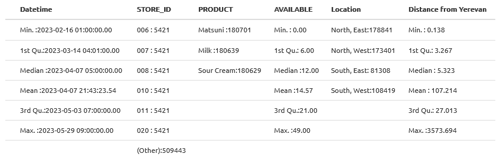
The dataset consists of six variables: the variable, STORE_ID represents the unique identifiers assigned to each store, with a total of 100 distinct stores in the dataset. The next variable, PRODUCT signify the three types of dairy products under investigation: Milk, Sour Cream, and Matsuni. This variable enable us to focus on the availability patterns of specific product categories across the stores.
The central variable of interest, AVAILABLE records the hourly count of available dairy products in each store. By examining this variable, we can observe fluctuations in stock levels and identify potential trends or seasonality in product availability. The dataset’s temporal granularity, captured at an hourly level, provides a detailed perspective on the inventory dynamics within the selected timeframe.
Additionally, the last two variables in the dataset capture the geographic characteristics of the stores. The variable Distance from Yerevan represents the distance of each store from the capital city, Yerevan, in kilometers. This information can help us assess whether proximity to the city has any influence on product availability or demand. The variable Location shows provides insight into the orientation of each store concerning the country’s center, further enhancing our understanding of the spatial distribution of the stores.
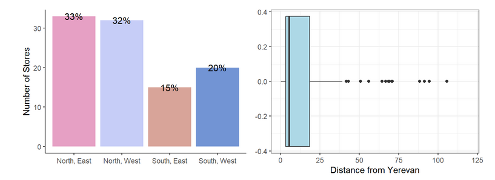
From the graph above it appears that the majority of the stores are located in the North part of Yerevan, comprising 65% of the total stores. Additionally, it is noteworthy that the majority of stores are located within a relatively close proximity, approximately within a 25-kilometer radius from Yerevan.
The graph above displays the hourly dynamics of the main variable for three types of products for one store. Analyzing the data, it is evident that the average replenishment frequency for all products is approximately 12 days. The average replenishment frequency of approximately 12 days indicates the store’s replenishment cycle, reflecting the time required to restock and maintain adequate inventory levels. This information is essential for optimizing inventory management practices and ensuring that the store can meet customer demand efficiently. Furthermore, it is observed that the average count of available Sour Cream is consistently lower compared to the other products. The contrasting availability levels between Sour Cream and the other products suggest potential differences in consumer preferences or demand patterns. Additionally, noteworthy is the relatively similar availability levels of Milk and Matsuni for this particular store.
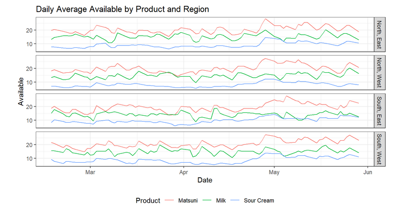
The presented graph illustrates the daily average availability of each product across different regions in the system (in all stores). It becomes apparent that Matsuni exhibits the highest availability, followed by milk, while sour cream demonstrates relatively lower demand. Moreover, it is noteworthy that the distribution of availability among regions is approximately uniform. This observation could potentially be attributed to the fact that livestock serves as the primary source of livestock production in the Republic of Armenia, with cattle breeding accounting for around 95% of milk consumption and nearly 55% of meat consumption.
In the following sections, we will delve deeper into the dataset and apply clustering techniques to unveil meaningful patterns and trends. By doing so, we strive to contribute to the field of inventory management by presenting a robust and data-driven approach for enhancing store product management strategies.
Why DTW can be useful?
Dynamic Time Warping (DTW) is a widely used technique for measuring the similarity or distance between two time series data. Unlike the Euclidean distance, which calculates the difference between corresponding points in two time series, DTW takes into account the possible time warping or alignment of the sequences. This makes DTW particularly useful when comparing time series with variations in speed or timing.
The key advantage of DTW over Euclidean distance is its ability to handle time lags or temporal distortions between the compared sequences. In many real-world scenarios, time series data may exhibit variations in speed, phase shifts, or temporal misalignments. Euclidean distance, by strictly comparing corresponding points, may fail to capture the underlying similarities between two time series with such variations. DTW, on the other hand, allows for flexible alignment, warping, and stretching of the sequences to find the best matching pattern.
In the context of availability clustering, DTW is particularly valuable because it enables the comparison of time series data without considering the exact time lag. In inventory management, it is crucial to identify similar availability patterns across different stores, even if they do not align perfectly in terms of the time of occurrence. For instance, a new store might experience a delay in its availability pattern compared to an established store. However, the overall shape or trend of the availability pattern could still be similar. DTW allows us to capture and quantify these similarities, providing a more robust and accurate measure of clustering or similarity between availability patterns.
Moreover, DTW accommodates time series data of varying lengths, making it suitable for cases where the length of the time series may differ across stores or products. This is particularly useful when dealing with stores that have a relatively short sequence of availability data. DTW can effectively align and compare such shorter sequences with longer ones, enabling the identification of similar patterns even in cases where the time series length varies.
By leveraging the advantages of DTW, availability clustering becomes a powerful tool in inventory management. It allows for the identification of stores or products with similar availability patterns, aiding in efficient stock management, demand forecasting, and replenishment strategies. The use of DTW ensures that time lags and temporal distortions are appropriately accounted for, resulting in more accurate clustering and better decision-making processes for optimizing inventory management in diverse retail environments.
DTW: Quickstart Example
For the example data of 2 Stores and 1 Product will be used. To demonstrate the application of Dynamic Time Warping (DTW), the Sakoe-Chiba band^[DTW offers various types of bands, such as Itakura and Sakoe-Chiba, which define constraints for the alignment path. Additionally, bands can be learned from data. For more detailed information on these band types, I recommend referring to the original paper by Sakoe and Chiba or the article titled “Dynamic Time Warping: Itakura vs Sakoe-Chiba” by Geler, Kurbalija, et al. These resources provide comprehensive insights into the different band approaches and their applications in DTW analysis.] approach is recommended. This method constrains the warping path to reduce time complexity and enforce local alignment. By defining a band around the diagonal of the cost matrix, the alignment search space is limited, allowing for more efficient computations and improved alignment results.
The cost matrix is a fundamental component in DTW, representing the pairwise distances between individual points in the two time series being compared. Each element in the matrix corresponds to the cost of aligning two specific points. The goal of DTW is to find the optimal path through the matrix with the minimum total cost, indicating the best alignment between the time series.
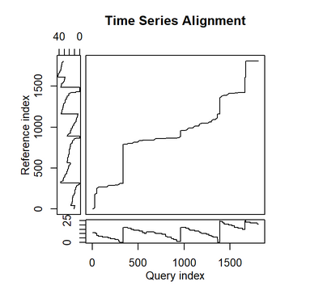
In the alignment path graph, the diagonal line represents the Euclidean distance, where each time point corresponds to the same time, regardless of DTW. The alignment path, shown as a curve, represents the optimal warping path determined by DTW. It captures the alignment of corresponding points in the two time series, taking into account possible time distortions or shifts.
The graph below (right one) illustrates the alignment between two time series for two stores and one type of product using the Euclidean distance. This straightforward measure compares corresponding points in the time series without considering time distortions. The alignment is achieved by connecting the points directly, resulting in a rigid alignment that may not accurately capture the underlying similarities between the time series.
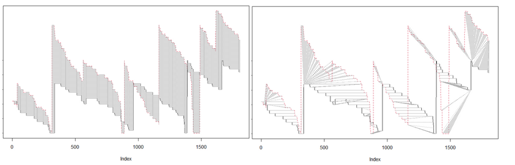
In contrast, the right graph demonstrates the alignment between the same two time series using DTW. By allowing for warping and stretching of the sequences, DTW identifies the optimal alignment path that minimizes the total cost. This flexible alignment accounts for potential time distortions and provides a more accurate representation of the similarities between the time series.
The DTW alignment path captures the correspondence between points in the time series, allowing for variations in timing and duration. It enables the identification of similar patterns, even if the time series exhibit differences in speed or temporal alignment. The use of DTW enhances the comparison and clustering of time series data, facilitating more accurate analysis and decision-making in inventory management and other applications.
By leveraging the power of DTW and understanding its alignment capabilities, analysts can uncover valuable insights, identify patterns, and make informed decisions based on the accurate comparison of time series data.
DTW vs Euclidean
To compare the results of Euclidean distance and Dynamic Time Warping (DTW) in measuring similarity between time series, a simple example was considered. The example consists of three time series representing the dynamics of three stores, with one product. Time series from one store (147, red) serving as the reference and the other two (177, 178 - blue, yellow) being compared to find the most similar one.
Upon comparing these time series using both DTW and Euclidean distance metrics, interesting observations were made. When utilizing DTW, the first time series (147) was found to be closer to the third time series (178) in terms of similarity. However, based on the Euclidean distance, the first time series appeared to be closer to the second time series (177).
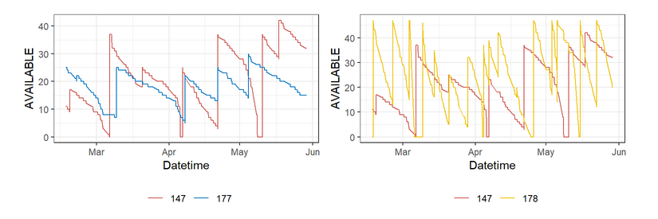
This discrepancy in results can be attributed to the ability of DTW to account for temporal distortions and variations in the alignment of corresponding points between time series. While Euclidean distance calculates the direct differences between corresponding points, DTW allows for flexible alignment, taking into consideration time warping and stretching.
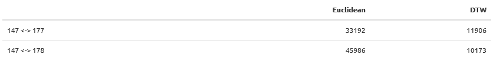
The calculated distances further highlight the contrasting results obtained from DTW and Euclidean distance. The observation that the DTW distance is smaller than the Euclidean distance in this example highlights the effectiveness of DTW in capturing the underlying similarity between time series.
These findings demonstrate the importance of selecting an appropriate distance metric when comparing time series data. While Euclidean distance is straightforward and useful in certain scenarios, DTW offers a more robust approach, particularly when dealing with time series that exhibit temporal variations or misalignments.
Cluster Analysis using Multi-Dimensional DTW for Store Time Series
To cluster the stores based on their time series data for three different products, a Multi-Dimensional DTW approach was employed. This involved calculating the distance between the time series of each product for pairs of stores, considering not only the distance between two time series but also the distances between the corresponding product time series of two stores. By performing this comparison for all pairs of stores, a \(100\text{x}100\) distance matrix was generated, providing a comprehensive measure of similarity between stores.
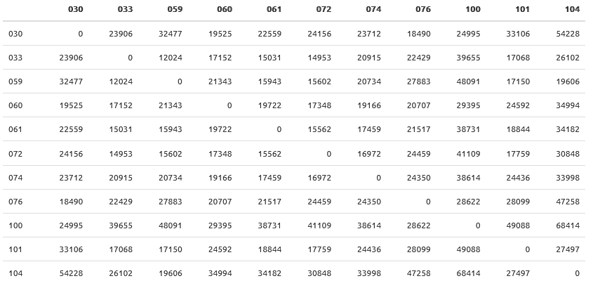
Using this distance matrix, k-means clustering was applied to group the stores into clusters. The number of clusters was determined based on the optimal solution, which in this case was found to be four clusters.
The same clustering procedure was repeated using the Euclidean distance metric for comparison. To assess the quality of the clustering results, the between-cluster sum of squares (BSS) and within-cluster sum of squares (WSS) were computed. The BSS measures the separation between clusters, indicating how distinct the clusters are from each other, while the WSS quantifies the compactness of each cluster. By evaluating the BSS and WSS values, we can determine the effectiveness of the clustering approach.
The centroid of each cluster represents the typical time series pattern for that cluster. In this case, the centroid products, which are the time series representing the centroid of each cluster, were selected to represent the cluster’s characteristics. By examining these centroid products, we can gain insights into the common patterns exhibited within each cluster.
Although the results of the comparison between DTW and Euclidean distances for clustering the store time series were relatively similar, the decision was made to utilize DTW as the preferred distance metric. This choice was based on the unique capabilities of DTW in handling time series data with variations in time alignment. In the context of store time series clustering, DTW provides a more robust measure of similarity.

The results, depicted in the graph above, showcase the four clusters, with each cluster represented separately. Within each cluster, three time series are represented as centroid products, providing a concise summary of the time series patterns for that cluster.
Multi-Dimensional DTW analysis offers a comprehensive understanding of the similarity between store time series for different products.
Describing Product Dynamics
Before delving into a detailed description of the clusters and their geographic characteristics, let’s explore the dynamics of each product within the clusters. To achieve this, we will examine the 7-day moving average availability dynamics of each product across the entire system, segmented by clusters. The graph presented below illustrates the time series dynamics for each product (arranged in rows), with the colored lines representing the differences in clusters.
Analyzing the dynamics of Matsuni availability, it becomes evident that clusters 3 and 4 exhibit significantly higher dynamics compared to clusters 1 and 2. This suggests that stores within clusters 3 and 4 have distinct patterns of availability for Matsuni, potentially indicating variations in demand or stocking strategies within these clusters. Similarly, the dynamics of milk availability differ noticeably across the clusters. Cluster 1 stands out with considerably lower availability dynamics compared to the other clusters, implying a distinct pattern in milk availability for the stores within this cluster.
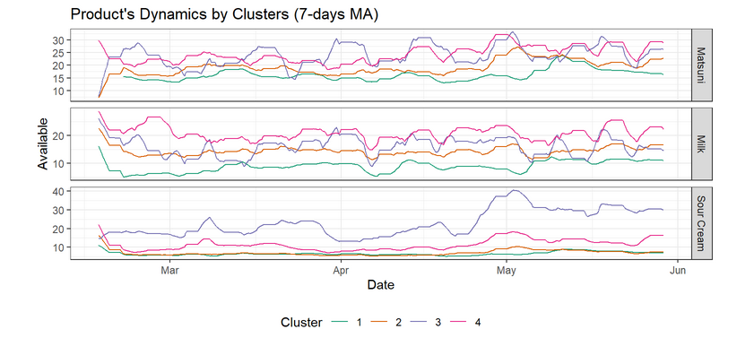
Turning our attention to Sour Cream, the stores within cluster 3 display a distinctive and higher pattern of availability dynamics compared to stores in the other clusters. This suggests that cluster 3 stores may have unique factors influencing the availability of Sour Cream, such as different sourcing or demand patterns, when compared to the stores in the remaining clusters.
Exploring Store Clusters and Regional Distribution
Describing Clusters
In this section, we will provide a description of the clusters by utilizing the prototypes or cluster centroids derived from the available time series data. In order to uncover distinct patterns and characteristics to each cluster the 7-day moving average of each product’s availability within each cluster will be used.
As mentioned earlier, the availability of dairy products serves as a reliable proxy for understanding consumer demand. In essence, we can use the terms “availability” and “demand” interchangeably when discussing dairy product dynamics.
Cluster 1: High Demand for Matsuni and Milk with Low Sour Cream Consumption
The first cluster stands out with a high availability of Matsuni and Milk dynamics, showcasing a relatively similar level of availability for both products. However, the availability of sour cream within this cluster is notably lower. This cluster represents stores with a strong demand for Matsuni and milk, while the demand for sour cream is comparatively lower.
Cluster 2: High Demand and Active Stores
This cluster represents highly active stores with a substantial demand for all three dairy products. Additionally, the general trend of product availability within this cluster is higher, further emphasizing the dynamic nature of these stores.
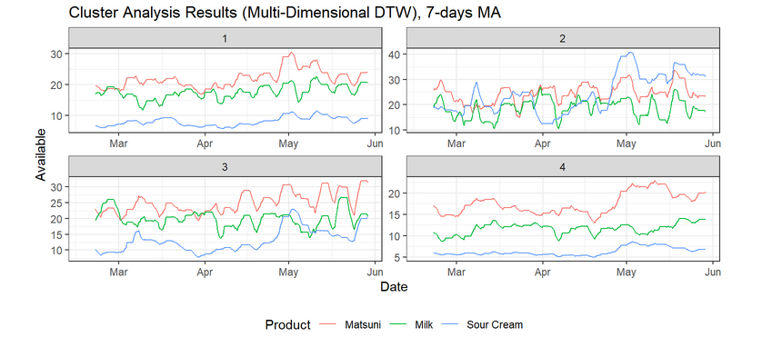
Cluster 3: Similar Availability for Milk and Matsuni with Fluctuating Sour Cream Availability
In Cluster 3, the availability of milk and Matsuni displays a similar pattern to that observed in Cluster 1. However, it is worth noting that the availability of sour cream experiences fluctuations around a level of approximately 15, particularly from April onwards. This cluster represents stores where the demand for milk and Matsuni is relatively consistent, while the availability of sour cream exhibits more variability.
Cluster 4: Less Active Stores with Focus on Matsuni Consumption
Cluster 4 comprises the least active stores, characterized by a higher consumption of Matsuni compared to milk and sour cream. The dynamics of milk and sour cream availability in this cluster are relatively low compared to the other clusters. This cluster represents stores where Matsuni consumption takes precedence, with milk and sour cream playing lesser roles.
Regional Distribution of Clusters
Moving beyond the analysis of product dynamics, it is equally important to explore the regional distribution of the clusters. This examination sheds light on the characteristics of stores within each region, enabling us to discern the specific types of stores present in different regions.
The geographical analysis reveals interesting patterns in the distribution of clusters across different regions of Armenia. The plot below demonstrates that the South region, encompassing both the West and East areas, predominantly comprises stores belonging to cluster 2, characterized by high activity levels. This suggests that stores situated in the southwestern part of the country exhibit a strong demand for all three products. Conversely, the northeastern region of Armenia accommodates stores from both the most active cluster and the least active cluster.
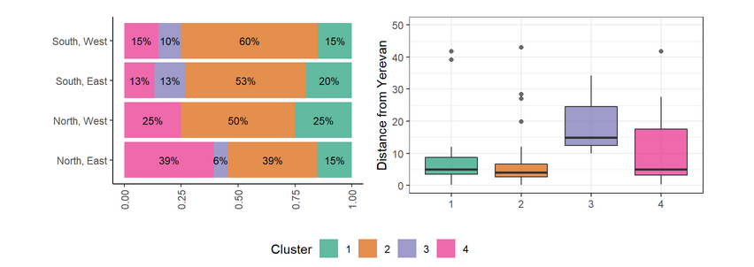
Furthermore, a general observation can be made regarding the proximity of stores to Yerevan, the capital city. Stores located in close proximity to Yerevan exhibit higher levels of demand dynamics for all product types, as evident in clusters 1 and 2. In contrast, stores situated farther away demonstrate lower availability levels and less frequent replenishment. This discrepancy can be attributed to the self-sustaining demand of rural areas and less active regions compared to urban centers.
These findings provide valuable insights into the regional distribution of store clusters and the varying dynamics of product availability and demand across different parts of Armenia. By understanding these regional variations, businesses can tailor their strategies to cater to the specific needs and preferences of customers in each area.
Optimal Order Quantity for each cluster and product
As mentioned in the introduction, the objective of this research is to address inventory management challenges by determining the optimal quantity of each product for different groups of stores. One of the key concepts utilized in this context is the Economic Order Quantity (EOQ). The EOQ represents the ideal order quantity that minimizes the total inventory costs, taking into account factors such as ordering costs, carrying costs, and demand.
The specific calculation of the EOQ for each product is presented below.
EOQ
- T = total annual inventory cost
- P = purchase unit price, unit production cost
- Q = order quantity
- Q* = optimal order quantity
- D = annual demand quantity
- K = fixed cost per order
- h = annual holding cost per unit
The total cost function and derivation of EOQ formula:
$${\displaystyle \text{Total Cost = Purchase cost + Ordering cost + Holding cost}}$$
- Purchase cost is the variable cost of goods
- Ordering cost is the cost of placing orders
- Holding cost is the average quantity in stock (between fully replenished and empty) is Q/2
$${\displaystyle T=PD+K{\frac {D}{Q}}+h{\frac {Q}{2}}}$$
Economic order quantity (EOQ) formula is often stated as.
$$EOQ = \sqrt{\frac{2DK}{H}}$$
Where D is annual demand quantity. Note that Q* is independent of P; it is a function of only K, D, h.
It is important to note that these calculations serve as a simplified demonstration and are not an exhaustive representation of the complexities involved in inventory management. Therefore, the presented EOQ calculations provide a starting point for inventory management optimization. In practice, a more comprehensive approach would consider various factors such as seasonality, dynamic EOQ adjustments, and other relevant considerations. By incorporating these additional factors, a more refined and accurate approach to inventory management can be achieved.
Calculating optimal quantity for Product-Cluster Combinations
In order to determine the optimal quantity (EOQ) for each product in each cluster, several inputs are required. These inputs include the annual demand quantity, fixed cost per order, and annual holding cost per unit. By utilizing these inputs, we can calculate the EOQ values that minimize the total inventory costs and maximize profitability.
The results of these calculations are depicted in the graph below, which illustrates the dynamic demand patterns for each product within each cluster. The solid lines on the graph represent the optimal order quantities determined by the EOQ calculations.
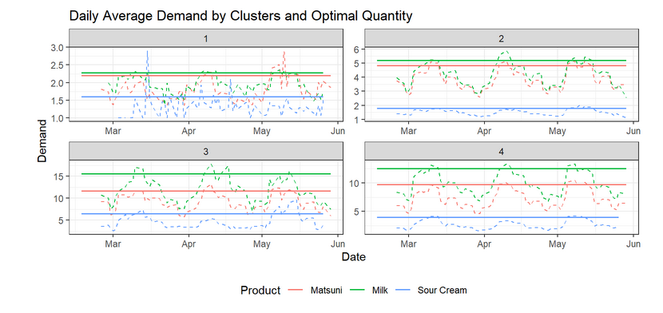
Understanding the EOQ for each product in each cluster is highly beneficial in terms of inventory control and decision-making. By knowing the optimal order quantities, businesses can avoid excessive stockouts or overstocking, leading to improved customer satisfaction and reduced holding costs. Furthermore, having accurate EOQ values allows businesses to optimize their procurement processes, streamline operations, and allocate resources effectively.
Overall, the utilization of EOQ provides businesses with a statistical approach to inventory management, enabling them to make data-driven decisions that enhance efficiency, profitability, and customer service levels.
Conclusion
In the study, we addressed the problem of inventory management by leveraging clustering techniques and calculating the Economic Order Quantity for different product-cluster combinations. Our aim was to provide insights and solutions for effectively managing inventory in a retail setting.
We utilized a dataset consisting of availability data from 100 stores, each offering three distinct products. By employing Multi-Dimensional Dynamic Time Warping (DTW) techniques, we performed clustering analysis on the time series data to identify similar patterns and group stores accordingly. This allowed us to gain a deeper understanding of the underlying dynamics within the retail system.
Multi-Dimensional DTW analysis offers a comprehensive understanding of the similarity between store time series for different products. Such insights can be instrumental in inventory management, demand forecasting, and decision-making processes within the retail industry. The statistical rigor of this approach ensures a robust analysis of the store time series data, enabling data-driven strategies for store grouping and optimization.
The resulting clusters provided valuable insights into the stores’ availability dynamics and demand patterns. Each cluster represented a distinct group of stores with unique characteristics. By examining the centroid time series for each cluster, we were able to interpret the behavior and trends specific to the products within those clusters.
Moreover, we calculated the EOQ for each product within each cluster. By considering factors such as annual demand quantity, fixed cost per order, and annual holding cost per unit, we determined the optimal order quantity for inventory replenishment. The EOQ results were plotted alongside the demand dynamics, providing a visual representation of the recommended order quantities for each product-cluster combination.
The implications of this research are significant for businesses operating in the retail industry. By leveraging clustering techniques and EOQ analysis, retailers can effectively allocate resources and optimize their inventory management strategies. The identified clusters provide a basis for targeted decision-making, allowing retailers to tailor their inventory levels and replenishment strategies based on the specific characteristics of each cluster. This, in turn, can lead to improved operational efficiency, reduced costs, and enhanced customer satisfaction.
References
- Geler Z., Kurbalija V., Ivanovic M., 2019, Radovanovic M., Dai W., “Dynamic Time Warping: Itakura vs Sakoe-Chiba”
- Sakoe H., Chiba S., 1978, “Dynamic Programming Algorithm Optimization for Spoken Word Recognition”
- Shokoohi-Yekta M., Hu B., Jin B., Wang J., Keogh E., 2015, “Generalizing Dynamic Time Warping to the Multi-Dimensional Case Requires an Adaptive Approach”